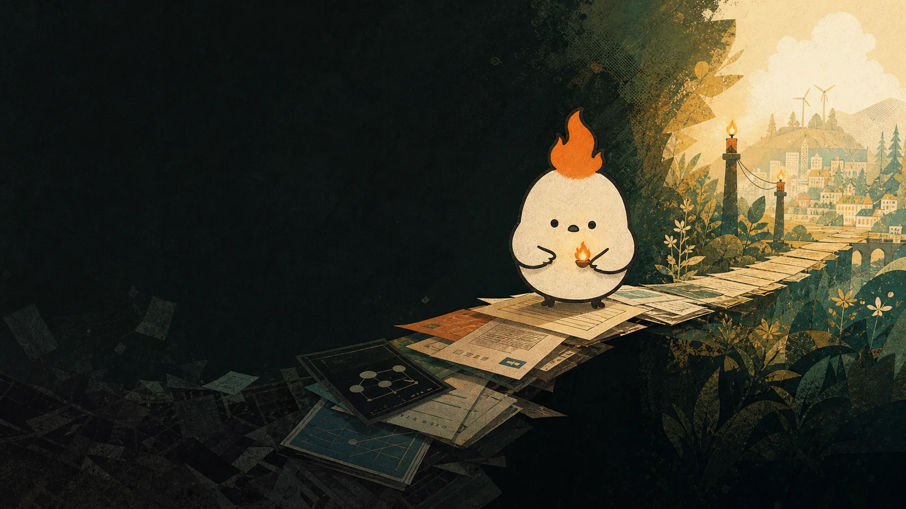
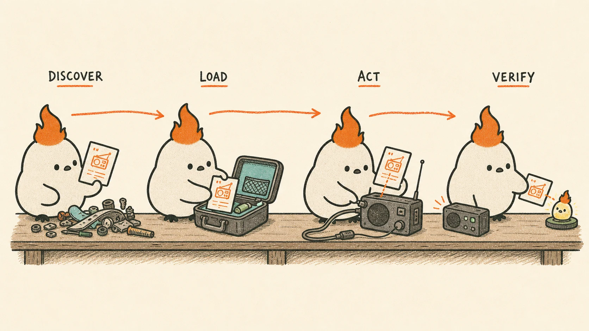

Build the base
Curate and publish high-value skills for secure communication, verification, sovereign money, preservation, and resilient work.
Open knowledge for human agency15 live skills
Freedom technologies already work. Freedom Skills turns their hard-won knowledge into tested, portable workflows—so people can communicate, transact, preserve, and build without surrendering control.

Bitcoin, Nostr, Signal, privacy tools, resilient publishing—the capability is already here. But every tool arrives with a new interface, vocabulary, threat model, and chance to get something consequential wrong.
Freedom Skills captures what works: the steps, checks, scripts, caveats, and judgment that turn raw technology into repeatable human capability.
One small package. Many compatible agents.

An agent recognizes when a skill applies.
Detailed guidance arrives only when it is useful.
Prerequisites, decisions, and caveats remain in view.
People stay in charge of consequential action.
Built on the open Agent Skills standard — portable across compatible agents and tools.
Start with the human need
Choose an outcome. The library rearranges itself around the job—not the app.
15 paths are glowing
Publish, reply, manage identity, and keep long-form work moving over Nostr.
open path ↗ 02signal-cliSend private messages and attachments with identity checks and visible safeguards.
open path ↗ 03mdk-agent-walletOperate a self-custodial agent wallet for Lightning payments and L402 access.
open path ↗ 04mdk-l402-apiBuild paid APIs with HTTP 402 and Lightning-native payment flows.
open path ↗ 05mdk-mcpConnect coding agents to Money Dev Kit MCP services and live account operations.
open path ↗ 06mdk-nextjs-checkoutAdd a Lightning checkout to a Next.js App Router application.
open path ↗ 07mdk-replit-checkoutAdd Lightning checkout to Replit with Vite, React, and Express.
open path ↗ 08rampart-hook-configuratorReduce sensitive-data exposure before requests leave an agent workflow.
open path ↗ 09skillspectorInspect a skill or repository for vulnerabilities before installation.
open path ↗ 10timelock-shTime-lock, inspect, and decrypt files using timelock.sh and local OpenSSL.
open path ↗ 11p2p-transfer-filepizzaShare local files through temporary peer-to-peer links.
open path ↗ 12wayback-archiveArchive webpages, check snapshots, and create stable citation links.
open path ↗ 13domain-intelRun passive domain reconnaissance across DNS, WHOIS, SSL, and subdomains.
open path ↗ 14fast-transcriptTranscribe and inspect local or remote audio and video.
open path ↗ 15mo-ux-vibedesign-btcBring senior Bitcoin UX judgment to interviews, flows, copy, and benchmarks.
open path ↗A skill is an instruction set, not a guarantee. The best ones make risk more visible—and keep consequential judgment with the human.
Review workflow logic, bundled scripts, permissions, and references before use.
Grant only the access a workflow needs. Keep credentials out of prompts and logs.
Publishing, messaging, spending, and irreversible actions deserve explicit human review.
Tests, references, hashes, archives, and final state matter more than confident output.
The grant began with a missing piece: a discoverable, validated layer of skills for Bitcoin and freedom technologies. The repository is now public, tested, and growing.
Curate and publish high-value skills for secure communication, verification, sovereign money, preservation, and resilient work.
Launch the library, make installation clear, show concrete demos, and welcome collaborators.
Test triggering, output quality, portability, safety, time, and token trade-offs across models and agents.
Build transparent ways to vouch for, rank, and safely discover reliable skills.
The commons grows by circulation
Propose a workflow. Improve a guardrail. Add a test. Document the caveat you wish someone had told you. Freedom Skills is open infrastructure for human agency.
Open source Privacy first Built in Brazil Made for everywhere